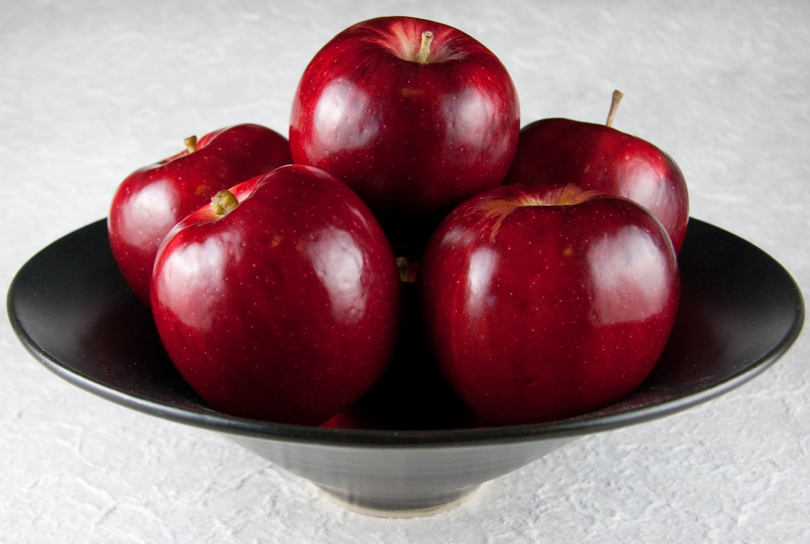

Задание 1
Горизонтальная линия
Задание 2
Рисунки в HTML-документах
Задание 3
Задание 4
Задание 5
Задание 6
Живой кефирный тибетский гриб
Полученный с его помощью кефир является уникальным лечебным препаратом, помогающим бороться с аллергией, гипертонией, язвенной болезнью желудка и двенадцатиперстной кишки. Его употребление нормализует кишечную микрофлору. Кефир, получаемый в результате жизнедеятельности гриба, оказывает общее оздоровительное действие и стимулирует иммунитет.
Кефирный гриб для похудения

Настой тибетского молочного гриба снижает вес при ожирении. Весь его секрет в том, что он преобразует жиры в более простые соединения, которе затем сам же и выводит из организма человека. Для того чтобы похудеть, следует пить настой тибетского молочного гриба ежедневно через полчаса после еды и один-два раза в неделю устраивать разгрузочные дни.
Задание 7
Елочка
В лесу родилась елочка,
В лесу она росла
Зимой и летом стройная,
Зеленая была.

Метель ей пела песенку:
- Спи, елочка, бай-бай.
Мороз снежком укутывал:
- Смотри, не замерзай.
Задание 8
Летающий ангел
Используя возможности HTML-языка можно заставить ангела летать по стрнице и не только ангела...
Задание 10